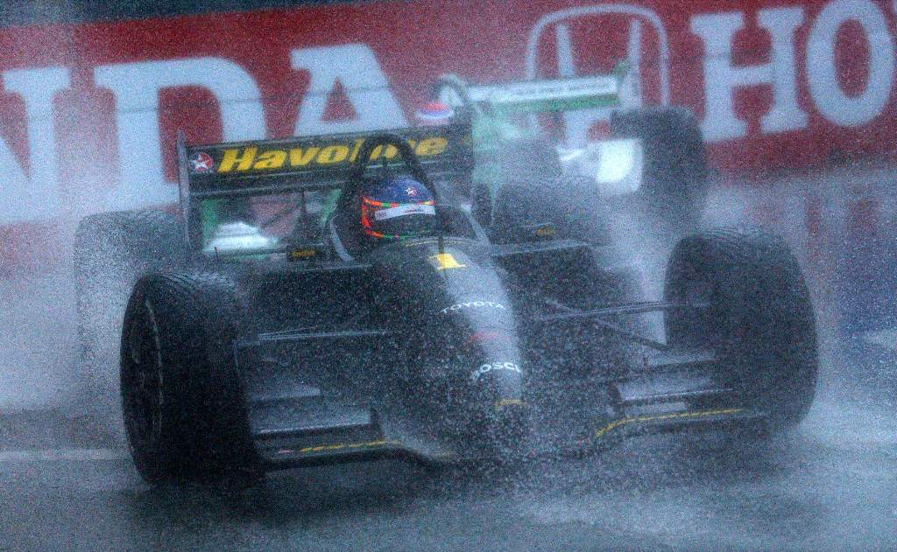
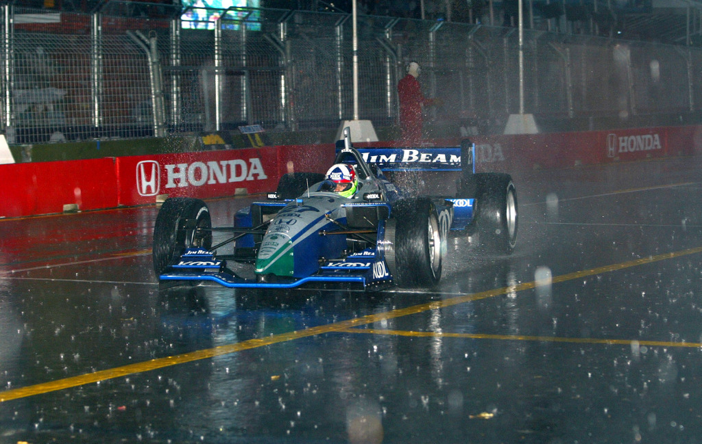
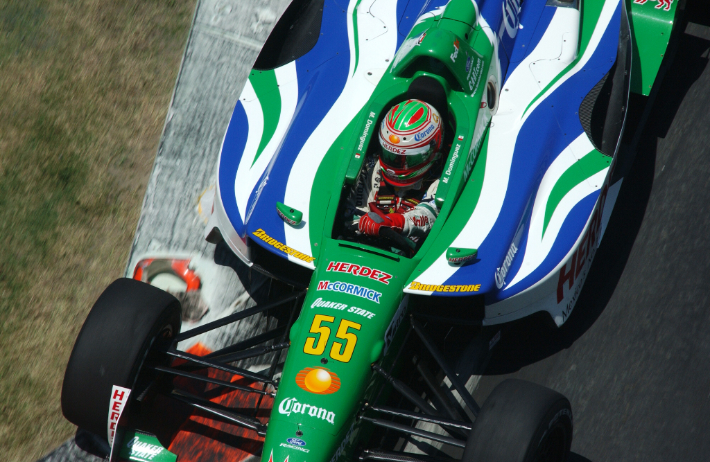
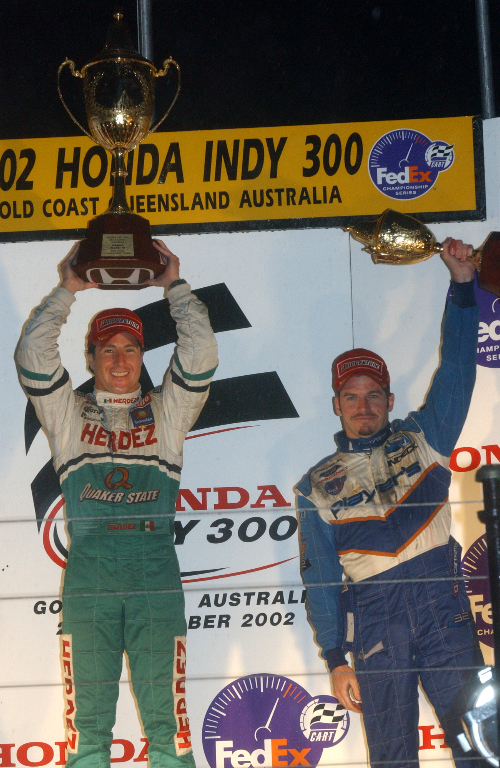

Confusão e surpresa

Etapa disputada no circuito de rua de Surfers Paradise foi marcada pela forte chuva, por um grave acidente e pela vitória inesperada de Mario Dominguez
POR RODRIGO GINI
Todos os pilotos não costumam acreditar na ajuda da sorte no automobilismo, mas, o que se viu na antepenúltima etapa da Fórmula Cart, o GP da Austrália, nas ruas de Surfers Paradise, dificilmente pode ser explicado de outra forma. Reconhecidamente o piloto mais lento da categoria, o mexicano Mario Dominguez, da equipe Herdez/Bettenhausen, viveu sensação semelhante à quem ganha na loteria duas vezes seguidas. Na primeira largada, saiu ileso de um acidente que envolveu oito carros, após atingir com violência o Reynard/Toyota de Tora Takagi. Na corrida para valer, contou com a ajuda dos céus para conquistar uma inesperada e muito comemorada vitória. A chuva constante fez com que apenas seis das 40 voltas da corrida fossem disputadas sob bandeira verde. O que se viu no restante do tempo foi o pelotão percorrendo os 4.498 metros do traçado em ritmo lento, atrás do Pace Car e aguardando pela melhoria das condições do tempo, o que acabou não acontecendo. Uma estratégia de paradas nos momentos certos colocou o mexicano, de 30 anos, no alto do pódio, como o sétimo vencedor no atual campeonato. Os quatro brasileiros tiveram suas corridas prejudicadas pelo estranho desenrolar da prova. O campeão Cristiano da Matta, estreando o número um em seu Lola/Toyota e um capacete com desenho psicodélico desenhado pelos irmãos Gustavo e Felipe, largou mais uma vez na pole e passou boa parte da corrida em 1º, mas recebeu a bandeirada em 8°, adiando o sonho de igualar o recorde de oito vitórias numa só temporada. Bruno Junqueira foi o mais rápido no treino oficial de sexta-feira e dividiu a primeira fila com Cristiano. Sem poder ultrapassar, acabou deixando a Austrália com um 14° lugar que não refletiu seu potencial. Tony Kanaan foi o melhor brasileiro em Surfers Paradise. Após deixar para trás a maré de azar que o perseguiu no início do ano, o piloto da Mo-Nunn conseguiu a 5ª posição. Christian Fittipaldi superou um problema no motor de seu Lola/Toyota e ainda ficou com a 11ª colocação final.

A chuva constante no domingo não esfriou o ânimo dos mais de 80 mil torcedores que acompanharam a prova. Na primeira largada, a ordem era que os pilotos se mantivessem em fila indiana nos primeiros metros. Nem todos conseguiram respeitar a orientação e, se os nove primeiros no grid passaram pela reta dos boxes sem problemas, o mesmo não aconteceu com Adrian Fernandez e Jimmy Vasser, que se tocaram. Quem veio atrás não teve como desviar e o que se viu foi um festival de demolição. Os carros de Vasser e Takagi acabaram virados de cabeça para baixo. Um paciente trabalho da equipe de resgate retirou os pilotos de seus carros. Takagi e Fernandez ainda foram levados para o hospital de Queensland, mas nenhum ferimento mais grave foi constatado. Após uma hora e meia de espera tensa e preocupação, devido à violência das batidas, novo procedimento de largada, com a previsão de 50 das 70 voltas originais. Desta vez, as três primeiras seriam disputadas sob bandeira amarela e as ultrapassagens só seriam permitidas a partir da quarta volta, após a curva 2. Cristiano mantinha uma boa vantagem para Bruno, enquanto a pista secava, mas na décima passagem, a chuva voltou intensa e levou a direção de corrida a neutralizá-la mais uma vez. Restou ao grupo de pilotos permanecer 31 voltas passeando pelo circuito. Dominguez assumiu o 1º posto com as mudanças de pit e teria de parar novamente na 42ª volta, mas foi beneficiado com a bandeirada de chegada mostrada pouco antes, quando a visibilidade ficou precária.
Futuro incerto
Menos de quatro meses separam a Cart do início de mais uma temporada mas, mesmo os dirigentes da categoria ainda não conseguem ter uma ideia clara do que os aguarda para 2003. Em meio aos esforços para impedir que um dos mais tradicionais campeonatos do automobilismo mundial perca seu prestígio, as certezas são poucas e, em sua maioria, negativas. Na esteira de Honda e Toyota, que resolveram “atravessar a fronteira” rumo à rival Indy Racing League, pilotos e equipes fazem o mesmo caminho. Depois da Penske, que levou consigo Gil de Ferran e Hélio Castroneves, as escuderias Ganassi e Andretti-Green — esta última comprada por Michael Andretti, que pretende pendurar macacão e capacete já no próximo ano — também arrumam as malas. Além de Michael, Dario Franchitti, Tony Kanaan, Tora Takagi e Scott Dixon preferiram acelerar na categoria comandada por Tony George. Cristiano da Matta encara o desafio de defender a Toyota na F1 e seu companheiro na Newman- Haas, Christian Fittipaldi, vai se dedicar exclusivamente à Nascar. “Claro que a incerteza relativa à Cart pesou na minha decisão. Estou em um ponto de minha carreira em que não posso correr o risco de ficar a pé em cima da hora”, admitiu Christian.

O inglês Chris Pook, atual presidente da Cart, não tem medido esforços para garantir um pacote capaz de atrair novas equipes e pilotos, além de manter as atuais. Uma das medidas confirmadas foi o incentivo financeiro de US$ 850 mil para cada carro alinhado. Os chassis Lola e Reynard permanecem os mesmos, um Cínico motor (Cosworth V8 Turbo) equipará os carros e o controle de tração volta a ser proibido. Certa mesmo, apenas a formação de um supertime canadense: Alex Tagliani e Patrick Carpentier passam a contar, na Forsythe, com a companhia de Paul Tracy. Especulações e negociações, no entanto, são a tônica. A campeã Newman-Haas contará com o mineiro Bruno Junqueira e, muito provavelmente, com o inglês Justin Wilson, que foi campeão de F-3000 em 2001. Mário Haberfeld testou um carro da Walker e se mostra animado com as perspectivas, assim como Ricardo Zonta. Roberto Moreno busca um acordo com a equipe Herdez/Bettenhausen e Gualter Salles busca patrocinadores e mantém contatos. Um piloto que parece próximo de garantir seu lugar é Darren Manning, que deixou boa impressão na sua estreia em Rockingham. O malaio Alex Yoong, o também inglês Anthony Davidson e o dinamarquês Jan Magnussen trabalham para se juntar a adversários como Jimmy Vasser, Oriol Servia e Adrian Fernan- dez, garantindo a competitividade, fundamental para atrair suporte e investimentos.
